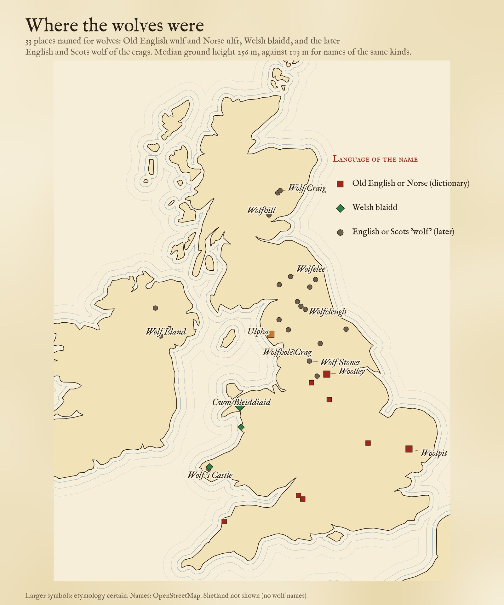
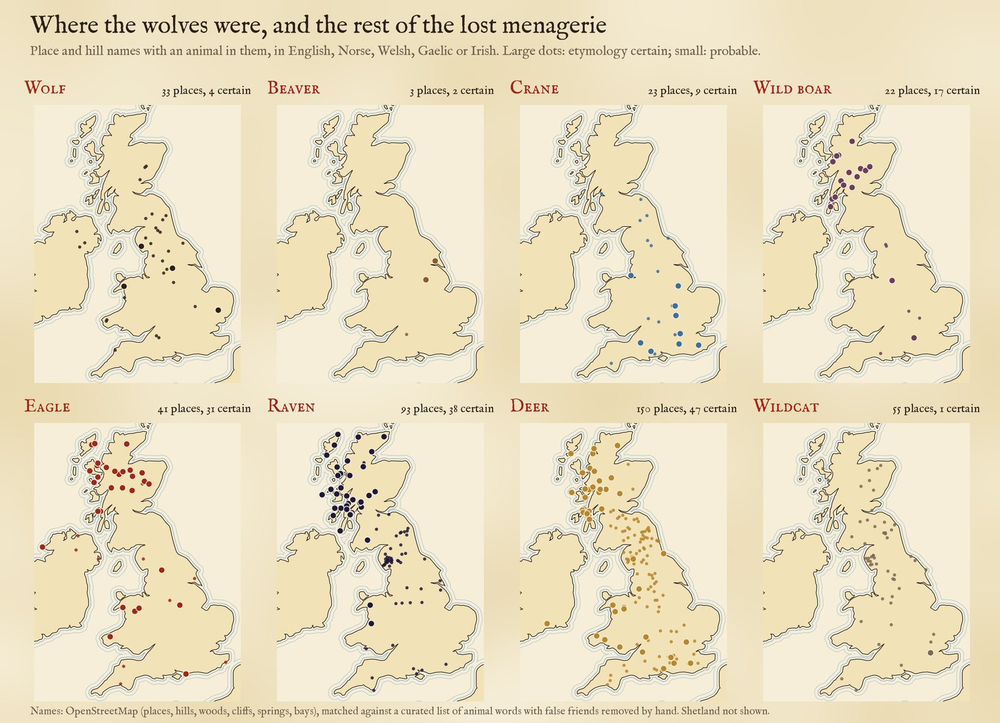
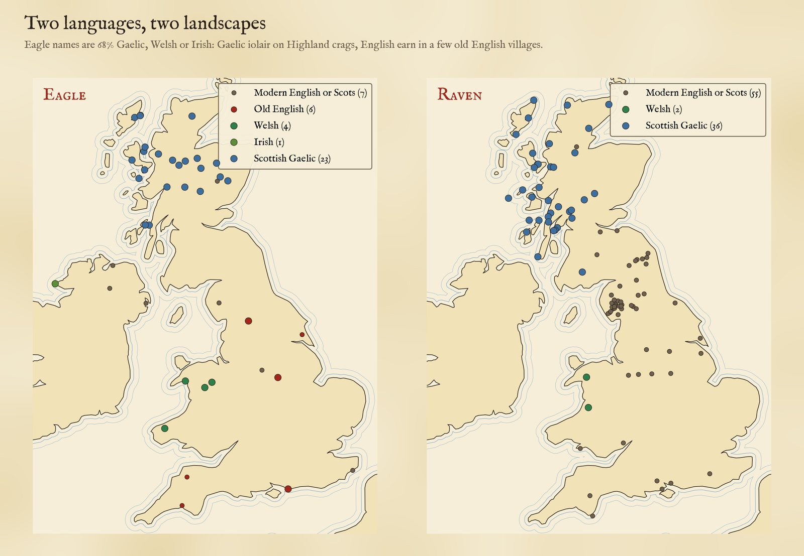
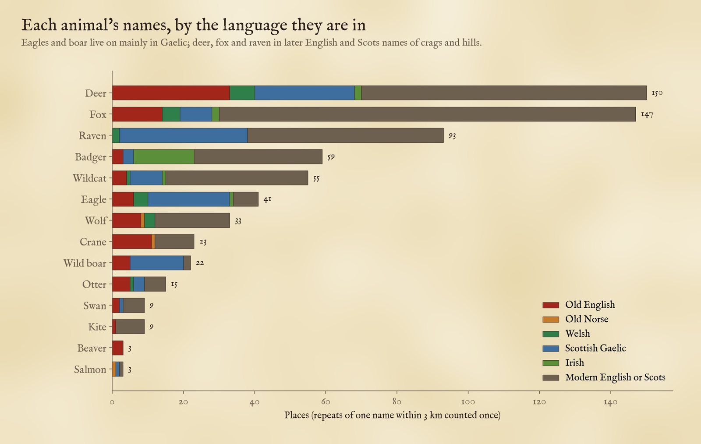
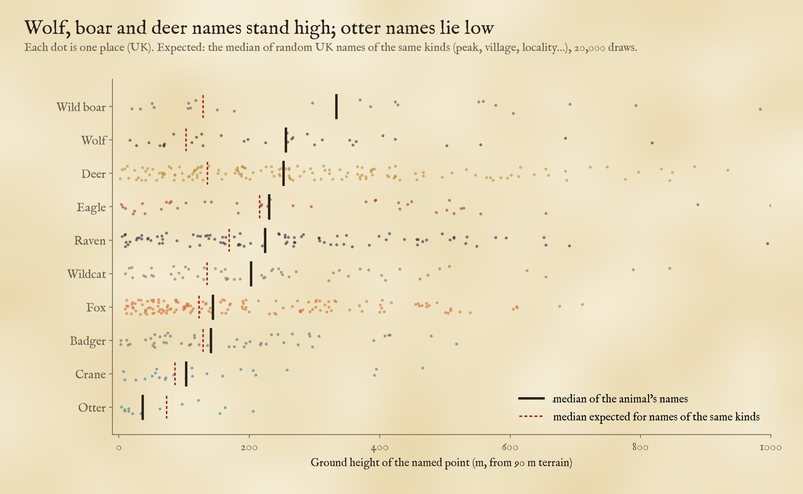
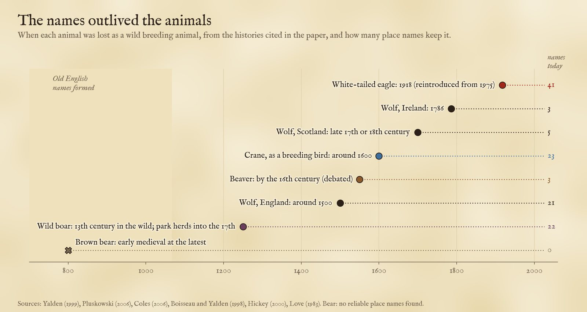

Wolves, beavers, cranes and wild boar are long gone from these islands, but their names are not. 662 places and hills in Britain and Ireland keep an animal in their name. Pick an animal; tap a dot to read the name.
The last wolf in England was probably killed around 1500, the beaver had gone by the sixteenth century, perhaps much earlier, and cranes stopped breeding here around 1600. But Woolpit in Suffolk still means a pit for trapping wolves, Beverley a stream of beavers, Cranfield open land where cranes stood. Place names are a fossil record of the animals people lived beside. I searched 145,934 named places, hills, woods, crags, springs and bays in Britain and Ireland for the animals in their names, in Old English, Old Norse, Welsh, Scottish Gaelic and Irish, and threw out the false friends one by one.
The map above shows the 662 places I kept. Choose an animal with the buttons; when one animal is chosen the dots are coloured by language. Larger dots are names whose meaning is certain, smaller ones probable. Tap any dot for what the name means.
There are 33 wolf names on the map. Only a handful are old and certain: Woolpit in Suffolk (Old English wulf-pytt, a pit to trap wolves), Woolley near Barnsley (a wood or clearing with wolves), Ulpha in the Duddon valley (Old Norse ulfr and haugr, the wolves' hill) and, in Welsh, Cwm Bleiddiaid in Gwynedd, the valley of wolves. Most of the rest are later English and Scots names of crags, cleughs and holes in the northern hills: Wolfhole Crag in the Forest of Bowland, Wolf Stones on the moors where Lancashire meets Yorkshire, Wolfcleugh in the North Pennines and Wolfelee in the Scottish Borders.
They stand high. The median wolf name lies 256 m above sea level, where random names of the same kinds (peaks, villages, localities and so on) lie at 103 m; in 20,000 random draws none was as high. Even against the other animals' names of the same kinds, matched for old names and later descriptive ones, they stand higher (p = 0.003). 73% of the English-language wolf names are north of Manchester. That fits the history: wolves lasted longest in the uplands and the north, and the crag names may record their last refuges, or simply the places shepherds feared them. A name is not a sighting, and some of these may recall a story or a surname.

Every wolf name kept, by language. Large symbols: certain.
Beavers leave only 3 names in this gazetteer: Beverley in the East Riding, Bevercotes in Nottinghamshire (the beavers' lodges) and Beversbrook in Wiltshire. Cranes leave 23, almost all (91%) in England, from Kent and Dorset to Lincolnshire and the Wirral: Cranfield, Cranbrook, Cranborne, Cranford, Cranmore, Cranwell, Cranleigh, and Tranmere on the Wirral, from the Norse trani. The dictionaries often say "cranes or herons", because Old English cran may have covered both. I expected crane names in the Fens; only 1 is in Cambridgeshire, Lincolnshire, Norfolk or Suffolk, and crane names lie no lower than ordinary names of the same kinds (103 m against 86 m).
Wild boar left the wild in the thirteenth century, but 22 places keep them. In England they are old villages, Eversley and Everdon from Old English eofor, and Wildboarclough in the Peak; in Scotland they are Gaelic hills and fords with tuirc, the boar's: Beinn an Tuirc in Kintyre, Brig o' Turk in the Trossachs, Càrn an Tuirc above Glen Shee.

Eight animals. Large dots: etymology certain; small dots: probable. Shetland not shown.
Each animal lives on in a different language. 68% of the 41 eagle names are Gaelic, Welsh or Irish: Creag na h-Iolaire, the eagle's crag, and its cousins on dozens of Highland hills; Carreg yr Eryr and Pen-yr-eryr in Wales; Nead an Iolair, the eagle's nest, in Ireland. Only 6 are Old English, from earn: Arncliffe in Littondale, Earnley in Sussex, Arnold near Nottingham. Ravens are the same: 38 of 93 are Gaelic fitheach or Welsh cigfran, and the English ones are crags and scars, 58% of them in Cumbria and Northumberland. Foxes and deer, still common, are named mostly in later English and Scots: Fox Hill, Foxholes, Tod Law and Tod Crag (Scots tod, the fox), Hart Crag and Harter Fell.

Eagle and raven names by language.

Each animal's places by language.
Ground height tells the story too. Against random names of the same kinds, wolf, boar and deer names stand much higher than expected, ravens and wildcats a little higher, and fox, badger, eagle and crane names about where expected. Otter names lie low, at a median of 36 m against 73 m expected, by rivers and the sea, as they should, though with only 15 places that difference is at the edge of chance (p = 0.05).

Ground height of each place (UK) with the median, against the median expected for names of the same kinds.
The richest corner of all is the Lake District: one 10 km square in the fells around Dunnerdale holds names for 4 different animals. By county, Northumberland has the most animal names for its size, 16.0 for every 1,000 named points, against 4.9 across the UK.
Most of the old English names on this map were formed between the seventh and the eleventh centuries, when wolves, beavers, cranes and boar were part of ordinary life. Put the dates side by side and the names have outlived the animals by four to eight hundred years.

When each animal was lost in the wild, from the histories cited in the paper, and how many names keep it.
Some have come back: white-tailed eagles were released on Rum from 1975, and cranes and beavers have since returned to a few places too. Their old names were waiting for them. There is no place name I could trust for the bear, which was gone before most of these names were made.
Place names love to mislead. I wrote down the false friends as I found them and removed 30 by rule and 26 more by hand, 7.0% of the 800 candidates, after reading every one:
Gaelic madadh on its own can be a dog, a fox or a wolf, so its 23 names (Creag a' Mhadaidh and the like) are on none of the counts.
Names. From OpenStreetMap (via the QLever query engine): 106,905 place points in the UK, from cities to farms and localities, with their Welsh and Gaelic names where tagged; 24,964 named peaks, hills, ridges, valleys, woods, cliffs, springs and bays; and 14,065 place points in Ireland, with their Irish names where tagged.
Animal words. Three kinds of rule. First, 69 English and Norse settlement names that the place-name dictionaries (Mills, Watts, Ekwall) explain with an animal, matched only as whole names and, where I know the county, only there: so Woolpit, Beverley and Cranfield, but not any farm that happens to share the name. Second, the ordinary Welsh, Gaelic and Irish words for each animal, inside each language's country (Welsh blaidd, wolf; Gaelic iolair, eagle; Irish broc, badger, and so on). Third, the English and Scots words (wolf, eagle, raven, hart, fox, tod, brock) but only with a landscape word (crag, hill, knowe, hole, scar) and never on houses, farms or modern suburbs. These last are mostly later medieval or modern, and marked probable. A list of false friends removes what it can; I read every remaining candidate and removed or corrected more by hand, recording each decision.
Counting. Repeats of one name within 3 km (Woolpit, Woolpit Green and Woolpit Heath) count as one place, which merged 82 names. Ground heights come from the open AWS Terrain Tiles.
What this cannot say. A name records what someone noticed, or feared, or joked about, when the name was given, not where an animal lived. OpenStreetMap is a gazetteer of today's points, not of every field and farm name ever recorded, so the counts are a sample, uneven between regions (field names, where most wildlife names hide, are almost absent). The dictionary readings are those of the standard works; some are debated, and the descriptive English names may honour a surname or an inn. Treat any single dot as a lead to follow up, and the patterns as the finding.